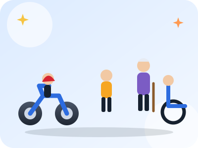

Canne blanche
Une personne traverse avec une canne blanche. Tu dois :
Cours · Route
Tous les usagers ne se ressemblent pas : certains sont petits, lents, imprévisibles ou peu protégés. Les protéger fait partie du code.

Vérifie tes connaissances
Une personne traverse avec une canne blanche. Tu dois :
Un ballon roule sur la route. Le bon réflexe est de :
Avant de tourner à droite, il faut penser à :
Pour dépasser un cycliste hors agglomération, la marge latérale est d'au moins :
Que signifie une canne blanche ?
La personne est aveugle ou malvoyante. Elle est prioritaire sur le passage piéton comme tout piéton, et on lui laisse le temps de traverser.
Pourquoi les motos sont-elles si difficiles à voir ?
Elles sont étroites et peuvent se cacher dans l'angle mort ou derrière un montant. Il faut regarder deux fois avant de tourner ou de changer de voie.
Puis-je me garer sur une place handicapé juste deux minutes ?
Non : c'est un stationnement très gênant, sanctionné de 135 € et du risque de fourrière.